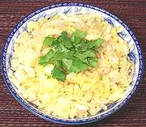

|
Chicken Foot Green Mango SaladMalaysia - Kerabu Kay Kar | ||||
| Serves: Effort: Sched: DoAhead: |
4 salad ** 1-1/4 hrs Best |
A rather pleasant salad with an interesting set of textures. Very similar boneless chicken foot salads are popular in Thailand and Vietnam, so deboned feet are available in larger Asian markets in Los Angeles. | |||
|
1 1 3 3 5 ----- 3 3 1 1 1/16 ----- |
# oz oz ---- T T T T t ---- |
Chicken Feet, boneless (1) Green Mango (2) Shallots Thai Chilis (3) Onion -- Dressing Lime Juice Fish Sauce Palm Sugar Sesame Oil Pepper, black -- Garnish Cilantro Leaves Scallions, chopped. |
Make: - (1-1/2 hrs - 45 min work)
|